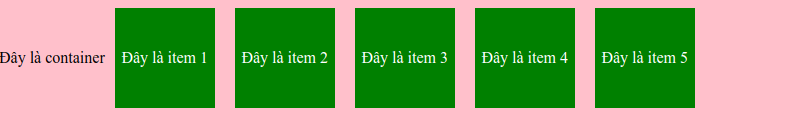

Flexbox(Flexible box) là một module của CSS giúp bạn dễ thở hơn trong việc chia bố trí, căn chỉnh và phân chia các khoảng trống của các items trong một container, đặc biệt là trong những trường hợp không biết trước về kích thước container hoặc kích thước container có thể thay đổi.
Một flexbox layout bao gồm một phần tử cha với một hoặc nhiều phần tử con. Phần tử cha dược xem là một container và các phần tử con là item.

Phía trên là minh hoạ về flexbox layout với container là phần có background màu hồng chứa các item có background màu xanh.
Container được hiểu nôm na là vật chứa hay phần tử cha và có chứa các phần tử ở phía trong. Container được định nghĩa bằng thuộc tính display: flex;.
row(mặc định): Hiển thị các item từ trái qua phải. row-reverse: Hiển thị các item theo thứ tự từ phải qua trái. column: Hiển thị tất cả item từ trên xuống dưới. column-reverse: Hiển thị tất cả item từ dưới lên trên.
no-wrap(mặc định): Toàn bộ item sẽ nằm trên một hàng hoặc một cột. wrap: Các item có thể chia thành nhiều hàng nếu không đủ diện tích với chiều là chiều của flex-direction. wrap-reverse: Các item có thể chia thành nhiều hàng nếu không đủ diện tích với chiều là chiều ngược với flex-direction.
Thuộc tính order quyết định thứ tự mà một hoặc nhiều item xuất hiện trong một flexbox container.
Thuộc tính flex-grow quyết định khả năng giãn ra của 1 item nếu cần thiết. Thuộc tính này cũng có thể được sử dụng như tỷ lệ giữa các item.
Thuộc tính flex-shirk quyết định khả năng co lại của item. Khi thuộc tính này được đặt bằng 0 thì item sẽ không co lại. Giá trị mặc định bằng 1. Thuộc tính này không chấp nhận tham số bé hơn 0.
Thuộc tính flex-basis quyết định độ rộng mặc định của 1 item.
Thuộc tính này giúp chúng ta có thể ghi đè thuộc tính align-items của
container hoặc căn chỉnh độc lập theo mỗi item.
flex start: Nội dung item căn về điểm bắt đầu của trục đối xứng.
flex-end: Nội dung item căn về điểm kết thúc của trục đối xứng.
center: Nội dung item căn về điểm giữa của trục đối xứng.
baseline: Nội dung item được căn chỉnh theo một đường cơ sở.
stretch: Nội dung item sẽ giãn ra và phủ kín container.